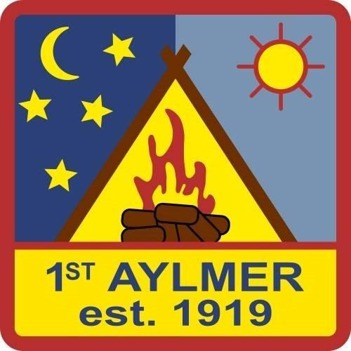

Les collectes de fonds aident à rendre le scoutisme plus abordable en aidant à payer les camps, le matériel et les activités spéciales. Cet automne, nous avons deux levées de fonds en cours. Nous vous invitons à les considérer si elles vous intéressent et nous vous invitons aussi à passer le mot.
Livraison prévue début décembre.
Nous reprenons pour la cinquième année de suite notre vente d'agrumes. Comme l'an passé, nous prévoyons recevoir la commande avant Noël.
Les oranges et les pamplemousses ont été d'excellente qualité, nous arrivant fraichement du verger. Si vous avez de la place pour les réfrigérer, ils se garderont au moins un mois. Notre fournisseur est l'Orange Barn et ils importent les oranges directement de la Californie et les pamplemousses du Texas. Typiquement, il y a 72 oranges dans une caisse de 40 livres et environ 36-40 pamplemousses dans une caisse de 40 livres. Les prix sont comparables à ceux des épiceries et une caisse se partage bien avec un ami.
La date limite pour commander est le 12 novembre. Attendez-vous à pouvoir récupérer votre commande à Aylmer la semaine du 7 décembre. La date exacte de la collecte sera indiquée lorsque que nous saurons la date de livraison.
Les paiements peuvent nous être envoyés par transfert Interac à oranges@aylmerscouts.ca. Prière donner les détails votre commande dans le message du transfert ou encore par courriel à la même adresse. Si vous voulez soutenir une section en particulier, dites-nous qui vous a vendu les fruits ou indiquez-nous quelle section (castors, louveteaux, scouts, scouts aventuriers ou scouts routiers).
Prix 2025
Oranges
|
Pamplemousses
|
Bôsapin livre les arbres de Noël à votre porte. Si vous êtes à la maison, les Soldats de bois l'installeront même pour vous. La commande ne peut pas être plus simple: suivez notre lien vers leur site web et choisissez vos options. Les choix les plus populaires partent vite, alors commandez tôt pour une meilleure sélection.
https://ottawa-gatineau.treasytrees.ca/alymer-scouts
Les sections oraganisent aussi d'autre activités de financement, par exemple
Écrivez-nous à fundraising@aylmerscouts.ca!
